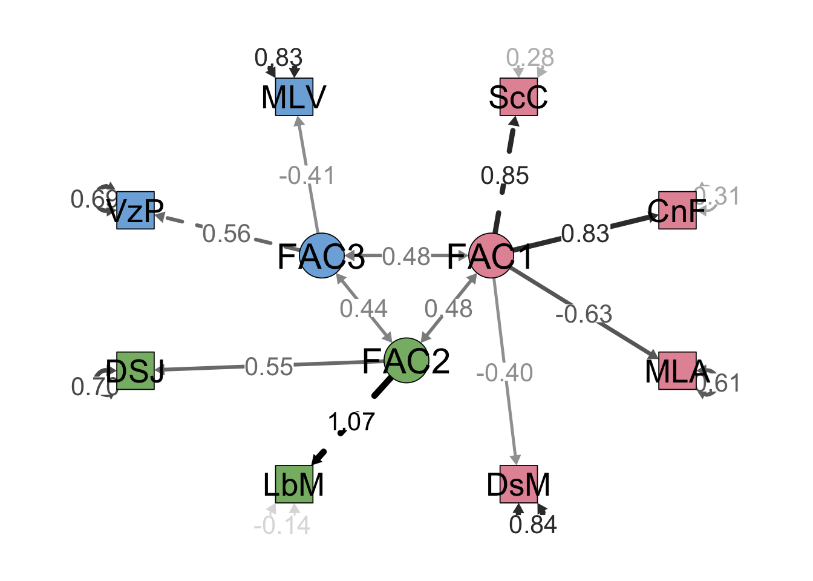

Análisis Factorial Confirmatorio

FACULTAD DE CIENCIAS SOCIALES - PUCP
Curso: POL 304 - Estadística para el análisis político 2 | Semestre 2023 - 2
Jefas de Práctica: Karina Alcántara 👩🏫 y Lizette Crispín 👩🏫
Vamos a trabajar con una base de datos creada por unos alumnos que buscan poder explicar la variable de desigualdad de género a nivel de países. Esta base de datos tiene las siguientes variables independientes:
País: País del que pertenece la información
DesigualdadGenero: Indice de desigualdad de género
MLAutonomia: Mide que tanto el sistema legal protege derechos reproductivos de las mujeres
MLViolencia: Mide que tanto el sistema legal protege a las mujeres de la violencia
VozPolítica: Presencia de mujeres en el parlamento
LibertadMov: Porcentaje de mujeres que declaran no sentirse seguras en las calles
DesconfianzaSJ: Porcentaje de mujeres que no confian en el sistema de justicia
SecundariaC: Porcentaje de población con secundaria completa
DesempleoMuj: Ratio de desempleo de mujeres frente a hombres
CuentaF: Porcentaje de mujeres que cuentan con una cuenta en el sistema financiero.
Las dos primeras variables son descriptivas, la primera es con respecto al país y la segunda es el índice, como un resultado final.
Lo llamaremos subdata:
Paso 1: Matriz de correlaciones
Generamos la matriz de correlaciones para identificar qué variables de nuestra subdata están correlacionadas.
Paso 2: Corroborar si se puede factorizar
KMO
Proceso correlación
Bartlet
Paso 3: Análisis Factorial Exploratorio
Gráfico de sedimentación
Recomienda 3 factores, 3 triangulos debajo de la línea punteada
Autovalores
También recomienda 3 factores :)
Factorizar
Podemos observar que hay unas líneas punteadas rojas, ello implica que las cargas factoriales son negativas, lo que significa que la relación entre la variable observable y el factor creado es inversa.
** Vemos cargas factoriales y cumulative var.**
1.Ver qué variables tiene cada componente
2.Ver la carga, que tanto aporta cada variable al componente.
3.Proportion Var y Cumulative Var
#Evaluamos las variables observadas
- ¿Qué variables observables tienen mayor información en común aportaron mas a los factores?
## MLViolencia DesempleoMuj VozPolitica MLAutonomia DesconfianzaSJ
## 0.1496488 0.2059285 0.2952376 0.4424106 0.5122846
## CuentaF LibertadMov SecundariaC
## 0.6136529 0.7533850 0.9964683Secundaria y Libertad Mov tienen mayor información en común con las demás variables (comunalidad)
- ¿Qué variables contribuyen a mas de un factor?
## DesconfianzaSJ MLViolencia SecundariaC VozPolitica CuentaF
## 1.042928 1.209716 1.239126 1.255815 1.533909
## LibertadMov MLAutonomia DesempleoMuj
## 1.537175 1.551318 1.865551- ¿Qué variables observables tiene un componente “único” más grande?
## SecundariaC LibertadMov CuentaF DesconfianzaSJ MLAutonomia
## 0.003531703 0.246615008 0.386347125 0.487715417 0.557589415
## VozPolitica DesempleoMuj MLViolencia
## 0.704762372 0.794071465 0.850351153ML Violencia y Desempleo mujer tienen mayor información única, ello quiere decir que aportan poco cn la información en común que se tiene con las demás variables.
Análisis Factorial confirmatorio
Como tenemos una sugerencia planteada en el AFE, lo corroboraremos con el AFC.
En caso una variable observable comparte en más de un factor la consideraremos en donde tiene una mayor carga factorial.
## [1] "MLAutonomia" "MLViolencia" "VozPolitica" "LibertadMov"
## [5] "DesconfianzaSJ" "SecundariaC" "DesempleoMuj" "CuentaF"Modelo_confir <- "FAC1 =~ SecundariaC + CuentaF + MLAutonomia + DesempleoMuj
FAC2 =~ LibertadMov + DesconfianzaSJ
FAC3 =~ VozPolitica + MLViolencia"
Modelo_confir## [1] "FAC1 =~ SecundariaC + CuentaF + MLAutonomia + DesempleoMuj\n FAC2 =~ LibertadMov + DesconfianzaSJ\n FAC3 =~ VozPolitica + MLViolencia"Lo que se realizaría es indicar el nombre de cada facrtor, y qué variables las integran, solo indicamos el nombre de estas variables, en el siguiente comando indicaríamos la base
## lavaan 0.6.16 ended normally after 263 iterations
##
## Estimator ML
## Optimization method NLMINB
## Number of model parameters 19
##
## Number of observations 121
##
## Model Test User Model:
##
## Test statistic 23.470
## Degrees of freedom 17
## P-value (Chi-square) 0.135
##
## Parameter Estimates:
##
## Standard errors Standard
## Information Expected
## Information saturated (h1) model Structured
##
## Latent Variables:
## Estimate Std.Err z-value P(>|z|)
## FAC1 =~
## SecundariaC 1.000
## CuentaF 0.941 0.106 8.902 0.000
## MLAutonomia -0.009 0.001 -6.895 0.000
## DesempleoMuj -0.006 0.001 -4.197 0.000
## FAC2 =~
## LibertadMov 1.000
## DesconfianzaSJ 0.388 0.110 3.533 0.000
## FAC3 =~
## VozPolitica 1.000
## MLViolencia -0.013 0.006 -2.185 0.029
##
## Covariances:
## Estimate Std.Err z-value P(>|z|)
## FAC1 ~~
## FAC2 138.009 30.184 4.572 0.000
## FAC3 78.279 29.080 2.692 0.007
## FAC2 ~~
## FAC3 31.992 11.128 2.875 0.004
##
## Variances:
## Estimate Std.Err z-value P(>|z|)
## .SecundariaC 251.725 62.639 4.019 0.000
## .CuentaF 261.953 58.521 4.476 0.000
## .MLAutonomia 0.075 0.011 6.900 0.000
## .DesempleoMuj 0.128 0.017 7.529 0.000
## .LibertadMov -16.010 31.116 -0.515 0.607
## .DesconfianzaSJ 43.848 7.328 5.984 0.000
## .VozPolitica 91.392 23.388 3.908 0.000
## .MLViolencia 0.036 0.006 6.195 0.000
## FAC1 644.026 122.846 5.243 0.000
## FAC2 126.940 34.105 3.722 0.000
## FAC3 41.112 23.687 1.736 0.083Nos fijamos en la tabla de Latent Variables, y que las variables tengan un pvalue menor a 0.05 para concluir que si aportan a los factores de manera significativa.
Graficamos
semPaths(modelo, intercepts = FALSE,edge.label.cex=1.5, optimizeLatRes = TRUE, groups = "lat",pastel = TRUE, exoVar = FALSE, sizeInt=5,edge.color ="black",esize = 6, label.prop=2,sizeLat = 6,"std", layout="circle2")
Podemos observar los 3 factores creados. Los numeros que vemos entre los factores y las variables latentes son las cargas facrtoriales, mientras más fuerte la línea o número mayor carga factorial tendrá. los numeros que vemos direccionados hacia las variable observable es la información que no es eplicada con el factor, lo esperado es que este sea menor que la carga factorial.
Agregamos los factores a la base de datos
subdata$factor1<- factorial_casos$MR1
subdata$factor2<- factorial_casos$MR2
subdata$factor3<- factorial_casos$MR3library(BBmisc)
data$autoecon <- normalize(subdata$factor1,
method = "range",
margin=2, # by column
range = c(0, 10))
data$percpinst <- normalize(subdata$factor2,
method = "range",
margin=2, # by column
range = c(0, 10))
data$autopol <- normalize(subdata$factor3,
method = "range",
margin=2, # by column
range = c(0, 10))